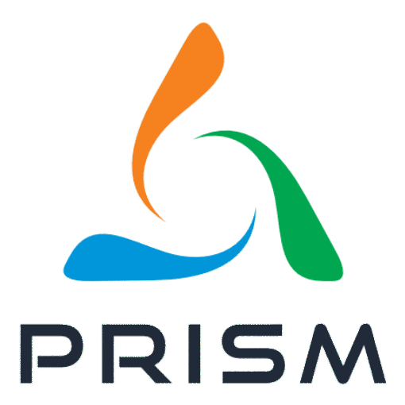
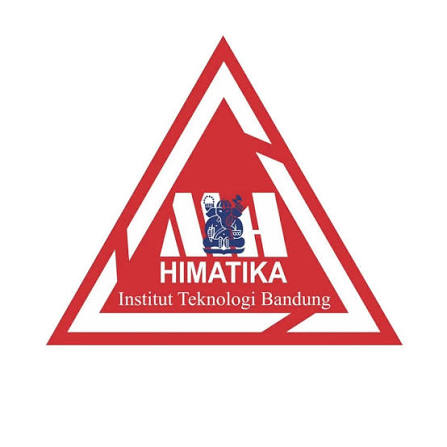
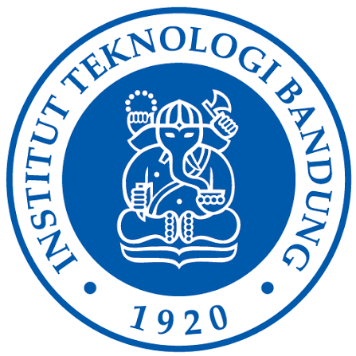

2026 - Present

Research Assistant at the Centre of Predictive Risk Simulation and Modelling (PRISM ITB), working on quantitative simulation, mathematical optimization, and industry-collaborative research:
- Co-authored quantitative research grant proposals, securing IDR 30M in competitive research funding.
- Daewoong Open Collaboration Project: Formulated mathematical optimization models for a microneedle drug-delivery system using
Pymooin Python, improving baseline optimization outcomes by 30% and accelerating runtime by 8x (from 2 hours to 15 minutes) withNumba. - Designed and deployed interactive analytical dashboards to communicate complex model trade-offs to stakeholders.
Jul 2026 - Present
Lead Researcher on industry-sponsored Operations Research & Supply Chain Optimization collaborations:
- PT. XYZ (Authorized Honda Motor Dealer): Developing a Predict-Then-Optimize framework combining statistical time series demand forecasting and multi-objective optimization (
NSGA-II+DESDEO) to determine optimal Point of Sale (POS) and distribution locations. - IDSC Pte Ltd (Jan – Jul 2026): Formulated a novel resource-constrained project crashing time–cost tradeoff model utilizing the Cobb–Douglas production function to minimize completion lead times under labor and overtime constraints.
Jan - Sep 2026

Data Analyst Intern at Otoritas Jasa Keuangan (Indonesia Financial Services Authority) in the Department of Banking Supervision Quality Control and Development:
- Contributed to Indonesia's Risk-Based Bank Rating (RBBR) framework, focusing on the Business Model Analysis (BMA) pillar.
- Audited, validated, and segmented multi-source datasets across 105 Indonesian banks (600+ observations) using statistical clustering to classify business models and peer risk profiles.
- Developed machine learning and statistical profitability forecasting / stress-testing models with 90% accuracy, operationalized via interactive Power BI supervisory dashboards.
2025 - 2026

Academic Teaching & Student Leadership at Institut Teknologi Bandung:
- Laboratory Assistant (Lab of Data Analysis, Mathematical Simulation and Computation, Sep 2025 – Dec 2026): Guided 40+ undergraduate students across 10 applied data analysis modules in
R. - Head of Data Science Competition (Mathematics Challenge Festival 2026, HIMATIKA ITB): Directed a 10-member committee organizing a national data science competition that attracted 950+ participants nationwide.
2023 - 2027

B.Sc. in Mathematics, Minor in Computer Science at Institut Teknologi Bandung (ITB).
- Cumulative GPA: 3.96 / 4.00 (125 / 144 Credits) — Dean's List for 6 consecutive semesters.
- Scholarship: Bank Syariah Indonesia (BSI) Scholarship Awardee.
- Relevant Coursework: Mathematical Optimization, Operations Research, Data Analysis, Advanced Time Series Analysis, Machine Learning, Deep Learning, Data Mining, Numerical Methods, Mathematical Statistics.